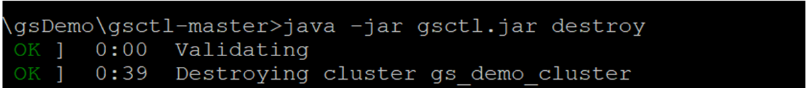

gsctl is a simple CLI tool for creating run java -jar gsctl.jar create.
In this topic, you will learn how to create, provision and install a
Before beginning to work with the gsctl tool, you must do the following:
Verify that Java 8 or higher is installed on your local workstation.
The gsctl tool is available from the
Follow the steps in the procedure to create a
To create a cluster:
Create an empty directory on your machine. In this example, the directory name is gsDemo.
Open a command window and type the following:
java -jar gsctl.jar init --mode=on-premise --cluster-name=gs_demo_clusterThis command creates a cluster.yaml file. Modify this file as follows:
keyName - name of your pem file (without the .pem extension)
userName
profiles - the on-premise worker (client) name, along with the IP addresses of the host machines
You must have 3 masters (gsManagers) and at least 1 worker.
gsManagers: 3
aws: null
onPremise:
keyName: "pem file"
userName: "user name"
masters:
label: "GS Cluster [gs_demo_cluster] Master Group"
profiles:
- name: "default on premise master name"
hosts:
- "127.0.1.93"
- "127.0.1.95"
- "127.0.1.96"
workers:
label: "GS Cluster [gs_demo_cluster] Worker Group"
profiles:
- name: "default on premise worker name"
hosts:
- "127.0.1.97"
- "127.0.1.98"
- "127.0.1.99"
name: "gs_demo_cluster"To create a cluster, run the following command:
java -jar gsctl.jar create